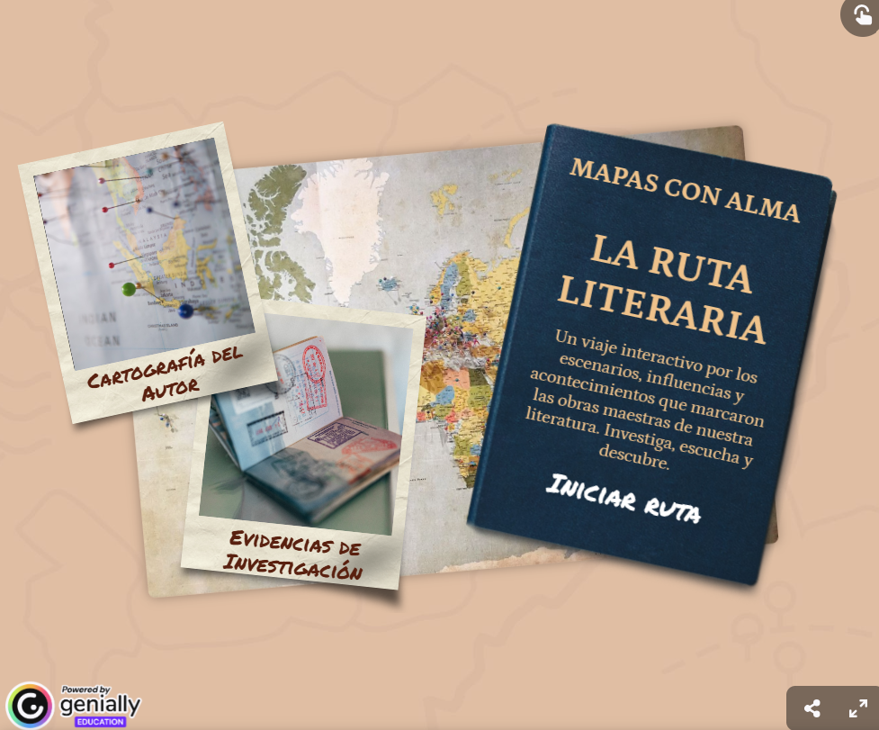

¿Preparados para el reto de producción?
Ya conocemos las peripecias de los grandes itinerantes de nuestras letras: El Cid Campeador, Don Quijote de la Mancha, Lázaro de Tormes y otros muchos. Pero, ahora, el libro se nos queda pequeño y debemos convertirnos en exploradores de escenarios reales.
¿Por qué os pedimos este salto al mapa? La respuesta es clara: porque la literatura es un viaje que se vive con los cinco sentidos. Vuestra tarea será reconstruir paso a paso esos caminos históricos, integrando vuestras propias voces y hallazgos en una Ruta Literaria que sirva de puente entre el pasado y el presente.
Para visualizar todos estos elementos y entender qué se espera de vuestro equipo, podéis explorar la presentación completa de nuestro producto AQUÍ.

Elaboración propia CC BY-SA 4.0